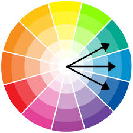
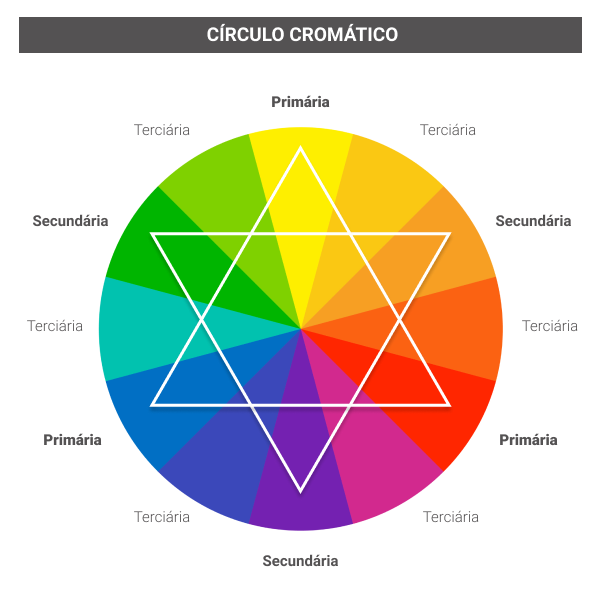

Paleta de cores: 0E2954 (azul escuro), 1F6E8C(azul claro), #2E8A99 (azul-verde)

Círculo cromático
O Círculo Cromático é uma representação em círculo das cores percebidas pelo olho humano. Ele é composto por 12 cores: as três primárias, as três secundárias e as seis terciárias.
Este instrumento um guia rápido de identificação das cores complementares, das análogas, das meio-complementares, e de outras combinações
harmónicas possíveis. Ele nos ajuda a descobrir combinações, comparações, etc.
classificação das cores no círculo cromático:
Cores primárias: azul, vermelho e amarelo.
Cores secundárias(mistura de duas cores primarias): verde, laranja e roxo/violeta.
Cores terciárias(mistura de duas cores secundárias): vermelho-arroxeado, vermelho-alaranjado, amarelo-alaranjado, amarelo-esverdeado, azul-esverdeado, azul-arroxeado.
A partir das 12 cores do círculo, além das cores branca e preta, uma infinita quantidade de cores pode
ser formada, com diferentes tonalidades e saturações.

Harmonias cromáticas
é a combinação de cores que funciona bem em conjunto e que produz um esquema de cores atrativo
Monocromática: Usa variações de uma única cor.
Complementar: Combina cores opostas no círculo cromático.
Semi-complementar: Usa cores adjacentes no círculo cromático.
Triádica: São 3 cores que tenham a mesma distância entre elas no círculo cromático, formando um triângulo equilátero.
Análogas: Uma das cores é a dominante (primária) e as outras são usadas em escala menor.
quadráticas:Fomra um quadrado no círculo cromático